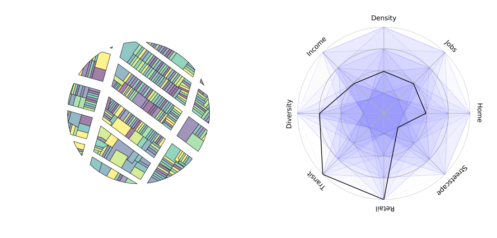
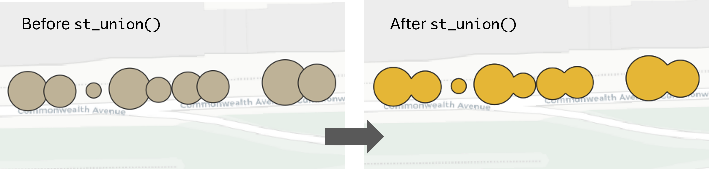
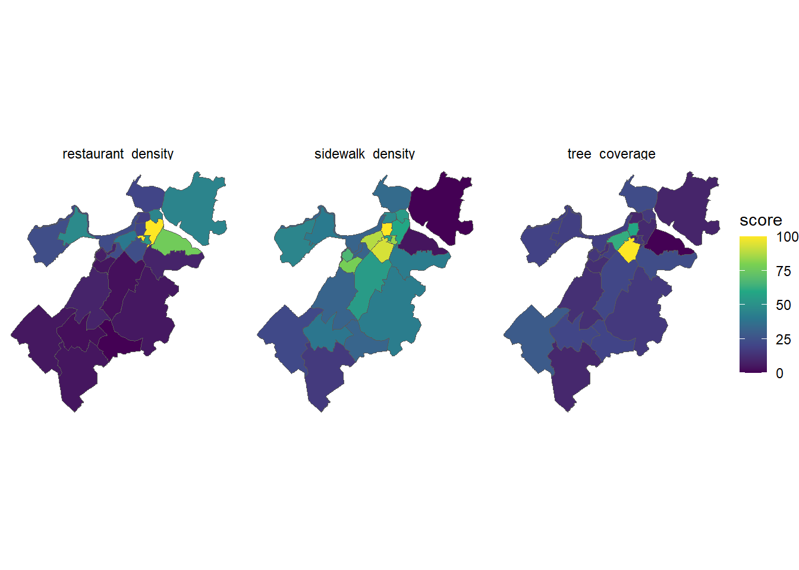
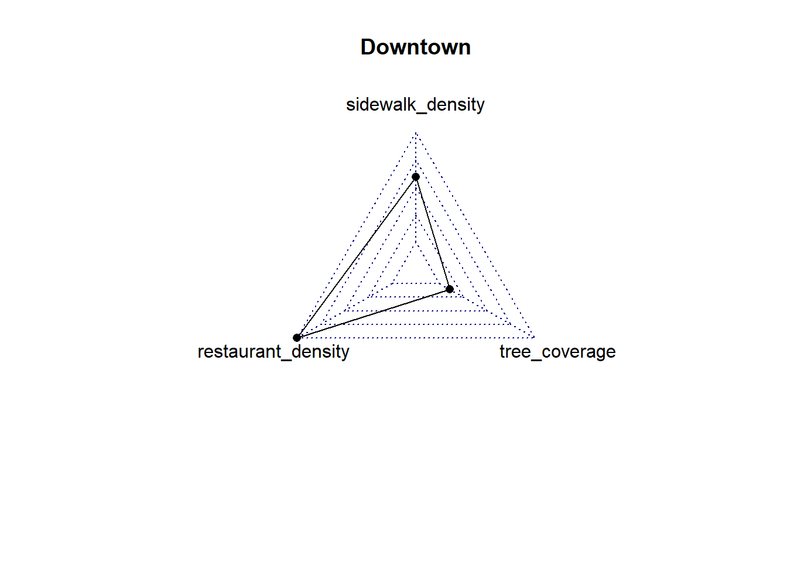

library(sf)
library(tidyverse)
library(osmdata)
library(DT)
library(scales)Describe neighborhood dynamics with 
11.S196/11.S939 Applied Data Science for Cities
Overview
In this lab, we will develop a place profile to quantify the physical and environmental characteristics of a given area. Planners are usually interested in understanding and enhance improving urban environments. Our approach will involve utilizing spatial data and conducting spatial analysis.

To put things into context, we will describe pedestrian-friendly built environment in Boston neighborhoods. Urban factors such as the presence of walking facilities, the density and variety of businesses, the number of residents and jobs, and streetscape elements like benches, storefronts, and shade all influence the extent and nature of walkable areas (Lai & Kontokosta, 2018; Frank et al., 2006; Owen et al., 2007; Ewing & Cervero, 2010).
For the purpose of demonstrating how to gather, combine and analyze spatial data from different sources, we are going to develop three relatively simple indicators to measure the pedestrian environment in a Boston neighborhoods: sidewalk density, number of restaurants measured by points of interest (POI), and tree canopy coverage.
Boston Neighborhoods
From Analyze Boston, let’s navigate to the Boston neighborhood boundaries page. Find the shapefile format, click Explore, and Go to resource. Save the zipped file to your project folder and then Unzip it. They are the polygons showing the boundaries of neighborhoods in Boston.
Note: If you are interested, here is how we can directly unzip a file with R commands.
unzip(zipfile = "your_file_name.zip", exdir = "data", overwrite = TRUE) file.remove("your_file_name.zip")}
Use st_read() in the sf package to read in the data. You may want to apply the correct path on your end.
neighborhood <- st_read("Boston_Neighborhood_Boundaries_approximated_by_2020_Census_Block_Groups.shp")There are many columns in this dataset, but we will choose the ones we need (neighborhood names and population) and assign them identifiable names.
neighborhood <- neighborhood |>
select(nbh_name = blockgr202, population = tot_pop_al)Note that this does not remove the geometry—geometries are “sticky,” meaning this column will stay attached to your table unless you explicitly remove them using st_drop_geometry().
Strategize our task
Eventually we aim to have a table where each row represents a neighborhood, and each column provides the values of a specific indicator, such as:
| Neighborhood | Sidewalk Density | Tree Canopy Coverage | Number of Restaurants |
|---|---|---|---|
| Allston | xx | xx | xx |
| Back Bay | xx | xx | xx |
We have line data for sidewalks. But we can split sidewalks at neighborhood boundaries (
st_intersection), and calculate the total sidewalk length within each neighborhood.Using tree canopy polygon data. Similarly, we can identify the overlap (
st_intersection) between tree canopy and neighborhoods and sum the canopy area within each neighborhood.We’ll obtain restaurant location data from OpenStreetMap. These are point data, so we’ll count the number of restaurant points within each neighborhood.
Then these three tables will be joined together to create the table we want.
Sidewalk density
From the front page of Analyze Boston, search for “sidewalk”, you will find the Sidewalk Centerline data. Download the Shapefile to your data folder, unzip it, and then use st_read() to read it into R and assign it to a variable (named e.g. “sidewalk”).
Check the results by clicking sidewalk in the Environment panel, or equivalently, using View(sidewalk). Details of each line are stored in the geometry attribute. While these details aren’t meant for humans to read directly, machines can interpret it and perform operations, such as calculating areas for polygons and length for lines:
sidewalk |> mutate(length = st_length(geometry))Simple feature collection with 110031 features and 4 fields
Geometry type: LINESTRING
Dimension: XY
Bounding box: xmin: 742172.1 ymin: 2909272 xmax: 811805.7 ymax: 2969957
Projected CRS: NAD83 / Massachusetts Mainland (ftUS)
First 10 features:
OBJECTID TYPE ShapeSTLen geometry
1 1 CWALK-CL 64.029105 LINESTRING (755403.2 295473...
2 2 CWALK-CL 48.941826 LINESTRING (757458.1 295887...
3 3 CWALK-CL 27.003284 LINESTRING (754873.1 295631...
4 4 CWALK-CL 50.113763 LINESTRING (756019.7 295713...
5 5 CWALK-CL 33.144903 LINESTRING (755399.5 295530...
6 6 CWALK-CL 51.157055 LINESTRING (756373.4 295663...
7 7 CWALK-CL 59.903693 LINESTRING (756988.7 295606...
8 8 CWALK-CL 77.648147 LINESTRING (756633.2 295547...
9 9 CWALK-CL 5.862916 LINESTRING (758622.5 295417...
10 10 CWALK-CL 44.308273 LINESTRING (760087.9 295349...
length
1 64.029105 [US_survey_foot]
2 48.941826 [US_survey_foot]
3 27.003284 [US_survey_foot]
4 50.113763 [US_survey_foot]
5 33.144903 [US_survey_foot]
6 51.157055 [US_survey_foot]
7 59.903693 [US_survey_foot]
8 77.648147 [US_survey_foot]
9 5.862916 [US_survey_foot]
10 44.308273 [US_survey_foot]We have an additional column, length , that stores the length of each segment. These lengths are calculated in feet because the neighborhood shapefile uses EPSG code 2249, which represents the “State Plane coordinate system Massachusetts Mainland (ftUS)” projection. State Plane projections are “projected”, meaning that x and y coordinates are measured in linear units (feet, in our case).
st_crs(sidewalk)$epsg [1] 2249st_crs(sidewalk)$input[1] "NAD83 / Massachusetts Mainland (ftUS)"Second, the values are “unit” objects. Although we can do basic math operations on unit objects, we typically convert them to simple numeric values using as.numeric():
sidewalk |> mutate(length = as.numeric(st_length(geometry)))Simple feature collection with 110031 features and 4 fields
Geometry type: LINESTRING
Dimension: XY
Bounding box: xmin: 742172.1 ymin: 2909272 xmax: 811805.7 ymax: 2969957
Projected CRS: NAD83 / Massachusetts Mainland (ftUS)
First 10 features:
OBJECTID TYPE ShapeSTLen geometry length
1 1 CWALK-CL 64.029105 LINESTRING (755403.2 295473... 64.029105
2 2 CWALK-CL 48.941826 LINESTRING (757458.1 295887... 48.941826
3 3 CWALK-CL 27.003284 LINESTRING (754873.1 295631... 27.003284
4 4 CWALK-CL 50.113763 LINESTRING (756019.7 295713... 50.113763
5 5 CWALK-CL 33.144903 LINESTRING (755399.5 295530... 33.144903
6 6 CWALK-CL 51.157055 LINESTRING (756373.4 295663... 51.157055
7 7 CWALK-CL 59.903693 LINESTRING (756988.7 295606... 59.903693
8 8 CWALK-CL 77.648147 LINESTRING (756633.2 295547... 77.648147
9 9 CWALK-CL 5.862916 LINESTRING (758622.5 295417... 5.862916
10 10 CWALK-CL 44.308273 LINESTRING (760087.9 295349... 44.308273Now we are going to perform intersection. st_intersection() finds the shared part of two spatial objects. If we overlay sidewalks with the entire neighborhoods, it splits sidewalks at neighborhood boundaries. Each split segment is linked to the attributes of the neighborhood it falls within.
sidewalk_data <-
st_intersection(sidewalk, neighborhood)It takes a few seconds to run, but when it’s finished, you will see that neighborhood names are attached in sidewalk_data! Then we can calculate the length of each split sidewalk segment.
sidewalk_data <- sidewalk_data |>
mutate(length = as.numeric(st_length(geometry))) With neighborhood names here in the table, we will group_by() neighborhood and summarise() the total sidewalk length.
sidewalk_data <- sidewalk_data |>
group_by(nbh_name) |>
summarise(sidewalk_length = sum(length)) |>
st_drop_geometry()I’ve dropped the geometry so we have a plain table. When it’s finished, you can View(sidewalk_data) . It has 24 rows, showing the total sidewalk length in feet in each neighborhood.
Tree canopy
For street trees, we will use the tree canopy data available for Boston. We have a visualization from the Treekeeper Street Trees. To work with this data, download and read the shapefile from this link.
As usual, check the CRS. This data uses EPSG: 4326, which is an unprojected system where locations are stored in longitude and latitude. To calculate areas, we need to use st_transform to convert it to the same projection as the sidewalks, EPSG: 2249.
tree <- st_read("Treekeeper_Street_Trees.shp") |>
st_transform(2249)View the attributes of the dataset. It uses point geometry, which indicates the location of trees. However, the dataset includes a dbh attribute, representing the diameter of trees at breast height. We can use this attribute to create a buffer around each tree to represent the canopy area.
tree_buffer <- st_buffer(tree, dist = tree$dbh/2)Tree canopies may overlap, so we need to “dissolve” these buffers into a single large polygon. The st_union() function achieves this by merging the overlapping areas to create the entire covered region.
Note: In the following code, the two steps following
st_union()may not always be necessary. In this specific case, I usedst_cast()to convert multiple polygons into a single one. You won’t need them if geometries being unioned are simple.
tree_data <- st_union(tree_buffer) |>
# Cast the unioned geometry to POLYGON type
st_cast("POLYGON") |>
# Convert the result back to an sf object and rename the geometry column
st_as_sf() |> rename(geometry = x)
Then we can calculate the area of tree canopy in each neighborhood.
Similar to the sidewalk data, intersect tree canopy and neighborhood polygons, then use mutate to calculate the overlapping areas, and then summarize the total areas by neighborhood. In the following code, we chained these steps together into one sentence.
tree_data <-
st_intersection(tree_data, neighborhood) |>
mutate(area = as.numeric(st_area(geometry))) |>
group_by(nbh_name) |>
summarize(canopy_area = sum(area)) |>
st_drop_geometry()Again, it take a few seconds to run. When it’s finished, you will have a tree_data object that has 23 rows - why one less than the sidewalk data - we will find out soon. But now we can pause and take a moment to appreciate what we’ve accomplished. We’ve worked with large spatial datasets using just a few lines of code. Consider the numerous clicks required in GIS; programming allows us to scale and automate many complex processes.
To free up memory, we can now delete a few intermediate objects in the R environment that are no longer needed:
rm(sidewalk, tree, tree_buffer)Obtain and process OSM data
To measure the number of amenities, we are going to download points of interest (POI) from OpenStreetMap (OSM). By allowing anyone to contribute, OSM enables the real-time evolution of its database and offers convenient options for downloading data through its free Overpass API. In this lab, we will use the osmdata R package, which simplifies API download queries without much understanding of the overpass syntax.
In order to obtain data from OSM, you will need to specify:
- a bounding box
- key-value pairs
The bounding box
A bounding box is like a window of where you want to clip a piece of map. It can be defined by manually specifying two longitude (x) - latitude (y) pairs. The following example defines one bounding box for Boston, the first pair (-71.188, 42.238) is the lower-left corner (southwest), and the second pair (-70.924, 42.393) is the upper-right corner (northeast)
# A bounding box for Boston
bbox = c(-71.188, 42.238, -70.924, 42.393)The key-value pairs
An overpass query opq starts with engaging with the bounding box like this:
q <- opq(bbox)
Following the initial opq(bbox) call, we will build queries by adding one or more features (add_osm_feature()). Features are defined by key-value pairs. For example, restaurants are categorized in OSM under key=amenity, and value=restaurant. Here is a complete list of key-value pairs on OSM.
A query of all restaurants within the bounding box of Boston will be constructed as follows:
restaurants <- opq(bbox)|>
add_osm_feature(key = "amenity", value = "restaurant") |>
osmdata_sf() The retrieved object restaurants is a large list of sf objects with many attributes; What we need is one named osm_points nested in this list. The following code extracts osm_ponits, and selects only the name attribute and the associated geometry.
restaurants <- restaurants$osm_points |> select(name)Now we can View the restaurants object. If you notice many missing values (NAs) in the names, scroll down to find more typical entries of restaurant names. This is a common issue with crowdsourced data like OSM, where the information provided may be incomplete.
Note: if you want to visually check your result, use
mapview(restaurants, legend = FALSE)
Check the CRS of restaurant. We want to associate our downloaded OSM data with the neighborhood shapefile, so they need to have the same CRS. Here we are converting it using st_transform().
restaurants <- restaurants |>
st_transform(2249)That’s it. Below I am repeating the “download, extract, and transform” process. You can try it with any other OSM data, such as grocery stores, fast food places, and other amenities, by applying the corresponding key-value pairs.
# bbox = c(-71.188, 42.238, -70.924, 42.393)
# restaurants <-
# opq(bbox)|>
# add_osm_feature(key = "amenity", value = "restaurant") |>
# osmdata_sf() |>
# pluck("osm_points") |>
# select(name)|>
# st_transform(2249)Calculate the number of POIs by neighborhood
We now have a point shapefile (restaurants) and a polygon shapefile (neighborhood), and we want to count the number of points in each neighborhood. They are points, so we don’t need to look for overlapping/intersecting parts, st_join() will be sufficient.
restaurant_data <-
st_join(restaurants, neighborhood) Take a look at what we’ve got. It’s still the same set of restaurants but each one has neighborhood information joined to it. Remove those fall outside of our neighborhood boundary, then count by neighborhood:
restaurant_data <-
restaurant_data |>
filter(!is.na(nbh_name)) |>
count(nbh_name, name = "restaurant") |>
st_drop_geometry()Assemble results
After calculating the three elements separately, we now have the following data for each neighborhood:
sidewalk_data: Total sidewalk length in feet.restaurant_data: Number of POIs for restaurants.tree_data: Total area of street tree canopy in square feet.
To create comparable metrics, we’ll normalize the raw data by calculating:
- Sidewalk density: total sidewalk length divided by neighborhood area (ft/sq.ft)
- POI per capita: total restaurant POIs divided by neighborhood population
- Street tree coverage: total tree canopy area divided by neighborhood area (sq.ft/sq.ft)
Okay, do we have the population and area of the neighborhoods? Check out the neighborhood shapefile we have, yes, population is there, and we just need to calculate the area.
neighborhood <- neighborhood |>
mutate(area = as.numeric(st_area(geometry))) Up to this step we have four plain tables: neighborhood, sidewalk_data, tree_data, and restaurant_data, all sharing the key column nbh_name.
left_join() merges two datasets by keeping all rows from the left and adding matching rows from the right based on a specified key column(s). It requires the arguments x (the left data), y (the right data), and by (the column(s) to join on).
Keeping neighborhood on the left, we can join the other three tables one by one:
result <-
neighborhood |>
left_join(sidewalk_data, by = "nbh_name") |>
left_join(restaurant_data, by = "nbh_name") |>
left_join(tree_data, by = "nbh_name")Let’s View the result.
By observing result you’ll notice: the canopy coverage for Harbor Island is not recorded - which is why we had one less rows for tree data. The original TreeKeeper dataset does not cover islands. We will also find no population is recorded for Harbor Island as well. We can choose to exclude this area and focus only on the geography cropped to the coastline.
result <- result |> filter(nbh_name != "Harbor Islands")Let’s calculate the normalized metrics. Normalization can be done with a series of mutate() functions as shown below. Following that, we will select() only the final output columns:
result <- result |>
mutate(sidewalk_density = sidewalk_length/area,
restaurant_density = restaurant/population,
tree_coverage = canopy_area/area) |>
select(nbh_name, sidewalk_density:tree_coverage) Here we’ve got our final, summary table.
resultSimple feature collection with 23 features and 4 fields
Geometry type: MULTIPOLYGON
Dimension: XY
Bounding box: xmin: 739715.8 ymin: 2908294 xmax: 795290.1 ymax: 2970217
Projected CRS: NAD83 / Massachusetts Mainland (ftUS)
First 10 features:
nbh_name sidewalk_density restaurant_density tree_coverage
1 Allston 0.008564768 0.0044373013 0.002969197
2 Back Bay 0.014395888 0.0037267715 0.009808325
3 Beacon Hill 0.015852077 0.0019280206 0.009403056
4 Brighton 0.009110513 0.0022346369 0.003135847
5 Charlestown 0.007845821 0.0019351464 0.003728595
6 Chinatown 0.013819173 0.0050398992 0.002365797
7 Dorchester 0.008714112 0.0005155863 0.002624161
8 Downtown 0.010884933 0.0092929894 0.001803340
9 East Boston 0.003524056 0.0042028514 0.001524641
10 Fenway 0.007478755 0.0021731641 0.002972764
geometry
1 MULTIPOLYGON (((758525.8 29...
2 MULTIPOLYGON (((771539.2 29...
3 MULTIPOLYGON (((774297.4 29...
4 MULTIPOLYGON (((754177.9 29...
5 MULTIPOLYGON (((773132.5 29...
6 MULTIPOLYGON (((775639 2953...
7 MULTIPOLYGON (((775867.2 29...
8 MULTIPOLYGON (((773867.7 29...
9 MULTIPOLYGON (((790148.5 29...
10 MULTIPOLYGON (((756955.2 29...Present our result
There are plenty of ways to create nicer, more presentable tables than the default output. You can check out packages such as DT (for data tables):
result |>
st_drop_geometry() |>
datatable()The calculated values may appear low and hard to distinguish. You can rescale() them to a range of 0-100 to create standardized “scores” for each neighborhood.
scores <- result |>
mutate(across(sidewalk_density:tree_coverage,
~ rescale(., to = c(0, 100)) |> round(2)
))
scores |>
st_drop_geometry() |>
datatable()As our result is a spatial object, we can also create maps to show the scores in neighborhoods:
scores |>
pivot_longer(cols = sidewalk_density:tree_coverage,
names_to = "indicators", values_to = "score") |>
ggplot()+
geom_sf(aes(fill = score))+
facet_wrap(~ indicators)+
scale_fill_viridis_c()+
theme_void()
We can also make some radar charts to show these scores - many examples on the linked page to customize the chart.
my_neighborhood <- "Downtown"
# install.packages("fmsb")
library(fmsb)
# Filter, select columns, and add max/min rows in one step
chart <- rbind(
c(100, 100, 100), # Max values
c(0, 0, 0), # Min values
scores |>
st_drop_geometry() |>
filter(nbh_name == my_neighborhood) |>
select(sidewalk_density:tree_coverage)
)
# Plot radar chart
radarchart(chart, title = my_neighborhood)
Exercise
What other indicators can you use to describe the built environment in Boston neighborhoods? For example, their transit supply (e.g. the number of bus stops, rail stops, or Bluebike stations), business activities (e.g., supermarkets, cafes), land use (open spaces or vacant land), or available facilities (e.g., benches, gardens).
In this exercise, you’ll continue exploring Boston neighborhoods by doing a mini-research to replicate or even expand on our process. Start by choosing 2-3 indicators that interest you, think about how you might calculate them, and then use spatial tools to work through your calculations. When you’re ready, present your results in your preferred way.
You can download the datasets you need from Boston data sources or OSM. Feel free to use any of the code provided earlier that you find helpful. But keep in mind the primary goal of this exercise is to practice spatial analysis in R. You should operationalize your metrics in a manageable way and choose indicators that work for you.
Work Product
Please start a new Quarto Document to document your work. Submit the Rendered HTML file when you finish. Make sure you have included embed-resources: true in your YAML header, this is to help preserve all your pictures in your HTML.

Please upload your report to Canvas by the end of day, Tuesday, Nov 12.